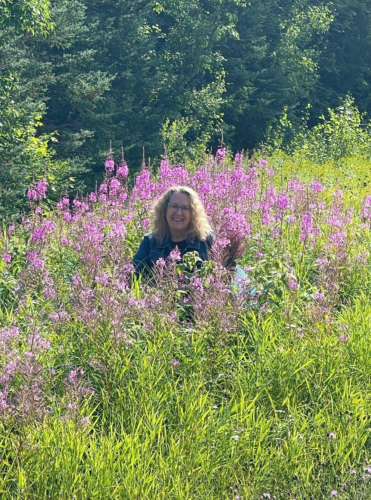

My story
About Me

Hi, I'm Deb Richards.
I founded Wild & Blue Botanicals with the goal of creating high quality, natural skincare products using formulations that include home grown, organic, and/or ethically sourced botanical ingredients to support skin health through plant-based traditions.
My journey into learning about the power of plants began as a teen in the mid 1970's when I purchased the book Jeanne Rose's Herbal Body Book. Jeanne was a renowned herbalist, aromatherapist, and author. Since then I've read more books, taken botany and ethnobotany classes, and have listened to blogs by many well known herbalists and naturopathic physicians.
Over the years I grew increasingly frustrated with commercial skincare products, not only for their steep price tags, but also for their long lists of hard-to-pronounce ingredients, synthetic fragrances, and unnecessary fillers. Driven by a desire for skincare that was both indulgent and effective, yet affordable and grounded in nature, I began crafting my own solutions. I now formulate, blend, test, and refine apothecary-style lotions and balms made entirely with clean, botanical ingredients.
You will notice that most of my products feature handcrafted, infused oils. To create these, I harvest and dry flowers, leaves, or roots, then soak them in carrier oil for several weeks. This slow process allows the botanical compounds to naturally transfer into the golden oils. It's a simple, old-fashioned technique that I personally perform for every batch, yielding nourishing, safe, and effective skin treatments.
As a side note, I have a deep passion for gardening, folklore, and ethnobotany, the study of how different cultures have used plants throughout history. Whenever possible, I weave this philosophy into my products by growing, harvesting, or foraging many of the botanicals used in my formulas right from my home garden yard, or fields in Duluth, Minnesota.
the power of plants, rooted in wisdom